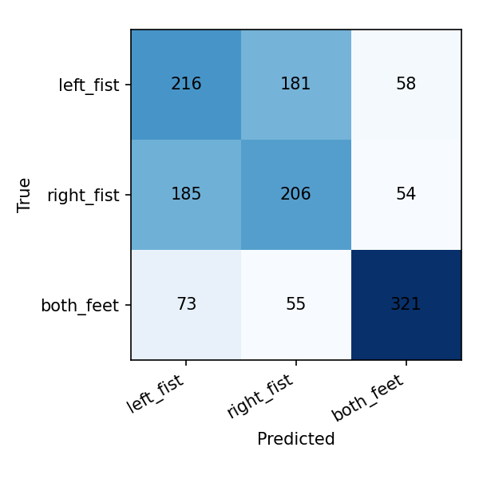
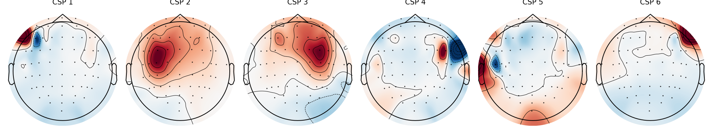

The same decoding problem behind real assistive tech
People living with paralysis or locked-in syndrome can still generate the same motor-cortex signals as anyone else when they imagine moving — the connection from brain to limb is broken, not the intention itself. Brain-computer interfaces exploit exactly that: read the imagined-movement signal, decode which movement was intended, and use it to drive a cursor, a wheelchair, or a speller. This project is a small, transparent, fully open-source attempt to build that decoding step from first principles, using the same public dataset that BCI researchers have used for two decades.
Four steps from raw signal to predicted movement
Raw EEG
64-channel scalp recordings while a subject imagines moving their left hand, right hand, or feet, cued by an on-screen prompt.
Band-pass filter
Keep only the 7–30 Hz mu and beta rhythms — the frequency bands that measurably change power during imagined movement.
CSP feature extraction
Common Spatial Patterns finds the electrode combinations that best separate the imagined classes from each other.
LDA classifier
A linear classifier turns those features into a predicted class and a confidence score for each option.
Pick a trial and watch it decode
Each sample below is a real held-out EEG trial. Press a sample, then Decode — the model has never seen this exact trial during training.
How well does it actually work?

Confusion matrix, pooled across subjects' held-out folds.

Spatial patterns the model relies on most for the best-performing subject.
How this project actually went
Notes from actually building this, kept as I went rather than reconstructed afterward.
Why I started this
I've always been interested in neuroscience, but I wanted to actually build something instead of just reading papers about it. Brain-computer interfaces stood out because they sit right at the intersection of signal processing, machine learning, and a genuinely meaningful application — restoring movement and communication for people who've lost it. I didn't have lab access or EEG hardware, so I started by figuring out what was actually achievable with just a laptop and a public dataset.
First working pipeline
The first real bug took a while to track down. After preprocessing, every subject was getting skipped by the training script with a "not enough classes" error, even though each one clearly had 60+ trials. It turned out I'd reused the same numeric code for two different movement classes — right-fist and both-feet — since they came from separate recording runs that happened to share the same underlying annotation codes. When I combined the data, one class silently overwrote the other. Fixing it meant assigning a unique code to each of the three classes before combining anything, instead of relying on the codes built into the raw annotations.
Reaching out for mentorship
I have a contact in radiology at Northwestern University and I'm planning to reach out now that there's a working demo to actually show them. The goal is a sanity check on the methodology from someone with real BCI/EEG research experience, and to ask whether a short pilot recording session on a research-grade EEG system might be possible — which would let a future version of this project use real, original data instead of only the public dataset.
What I'd do with more time
With the full pipeline working, the model reached 54.9% accuracy across 20 subjects on a 3-class problem where chance is 33.3% — a real signal, but far from polished. The more interesting pattern isn't the overall number: the model is much better at telling "both feet" apart from the hand movements (precision/recall around 0.72–0.74) than at telling left hand from right hand apart from each other (both around 0.46–0.55). That tracks with what's known about the brain — the cortical regions controlling the left and right hand sit close together, so the EEG difference between them is genuinely subtler than the difference between hands and feet. With more time, I'd want to try a deep-learning baseline like EEGNet to see if it picks up the left/right distinction better, and test whether a model trained on one person transfers to a new person at all, since every result here is within-subject.